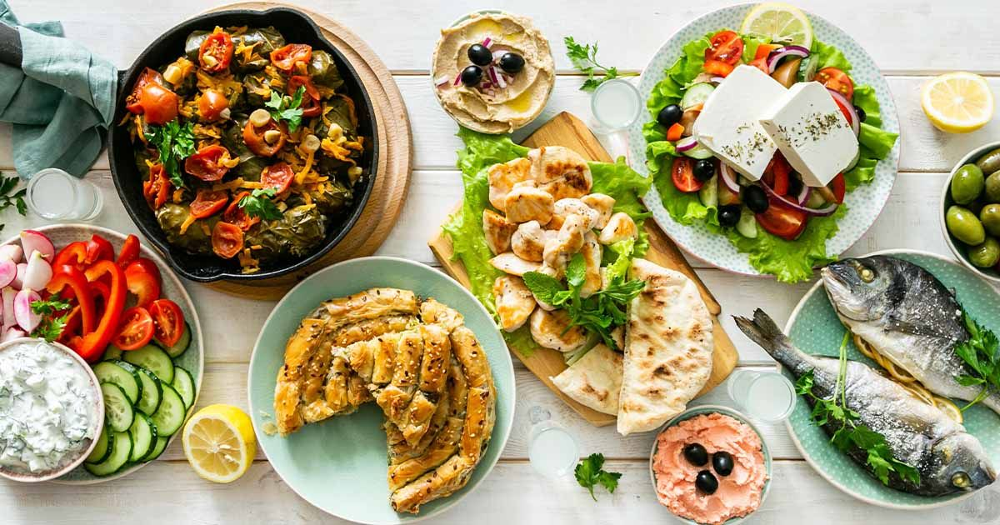
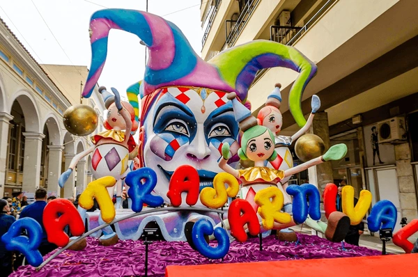
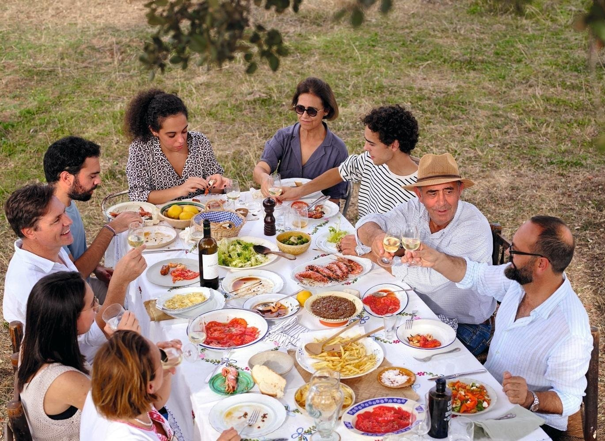

Greece is a land where ancient traditions blend seamlessly with modern life. From its rich history rooted in mythology and philosophy to its vibrant community festivals, Greek culture is welcoming, expressive, and full of life.
1. Food Habits

Greek cuisine is a cornerstone of its culture. Meals are not just about eating but about sharing, conversation, and hospitality — known as “philoxenia” (friend to strangers).
Popular Greek Foods:
- Moussaka: A layered eggplant and meat dish with béchamel sauce.
- Souvlaki: Grilled skewered meat, often served with pita and tzatziki.
- Greek Salad (Horiatiki): Made with tomatoes, cucumbers, olives, feta cheese, and oregano.
- Dolmades: Vine leaves stuffed with rice and herbs.
- Baklava: A sweet pastry with nuts and honey syrup.
Dining Culture:
- Greeks usually eat dinner late, often after 8 PM.
- Meals are leisurely; food is meant to be enjoyed slowly.
- Tipping is appreciated but not mandatory.
2. Local Festivals

Greece celebrates numerous festivals, many of which are tied to its Orthodox Christian traditions and local customs. Festivals often feature music, dance, traditional dress, and food.
Famous Greek Festivals:
- Easter (Pascha): The most important religious celebration, featuring candlelight processions, fireworks, and traditional feasts.
- Athens Epidaurus Festival (June–August): A celebration of ancient drama, music, and modern theatre, often performed in ancient amphitheaters.
- Thessaloniki International Film Festival (November): A major cultural event drawing filmmakers and fans from across the globe.
- Patras Carnival (January–February): One of Europe’s largest carnivals, filled with parades, costumes, and street parties.
- Ohi Day (October 28): A national holiday commemorating Greece’s refusal to surrender in WWII — celebrated with parades and public events.
3. Customs & Social Behavior

- Hospitality (Philoxenia): Greeks are warm and generous with guests, often offering food or drinks even to strangers.
- Greetings: A handshake is common; friends greet with a kiss on both cheeks.
- Dress Code: While casual dress is fine, modest attire is expected when visiting churches or monasteries.
- Family Values: Greek society is family-oriented, with close-knit relationships and respect for elders.